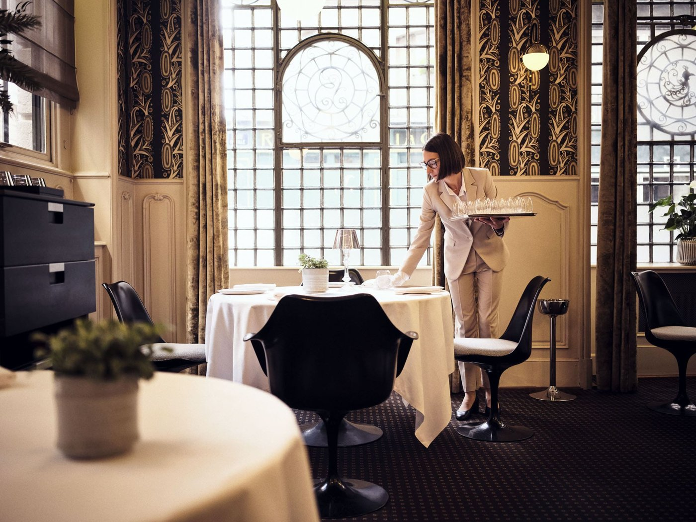
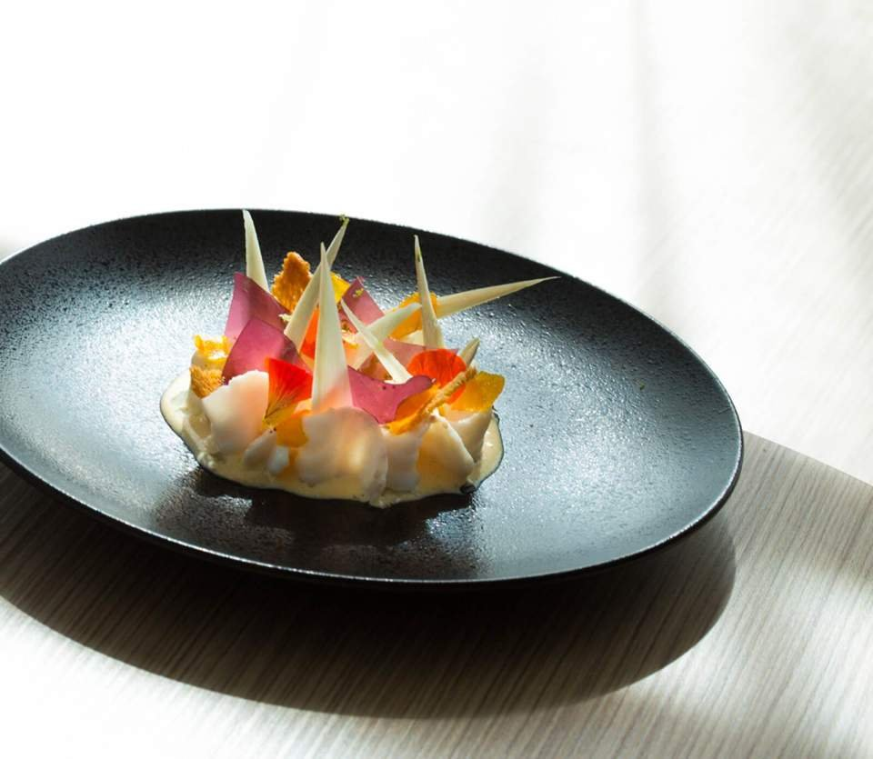
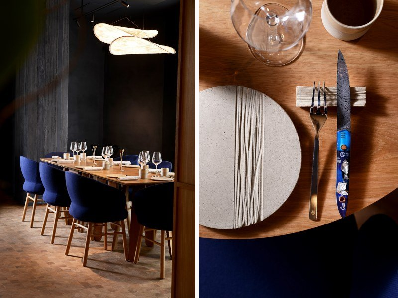
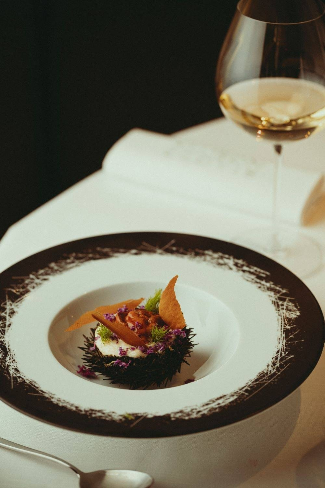
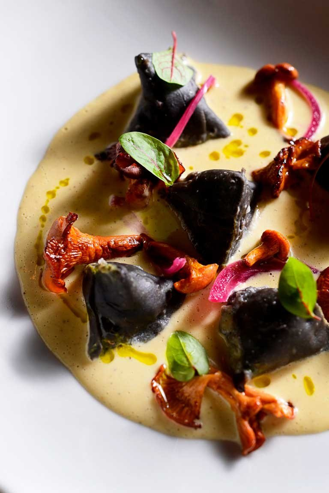
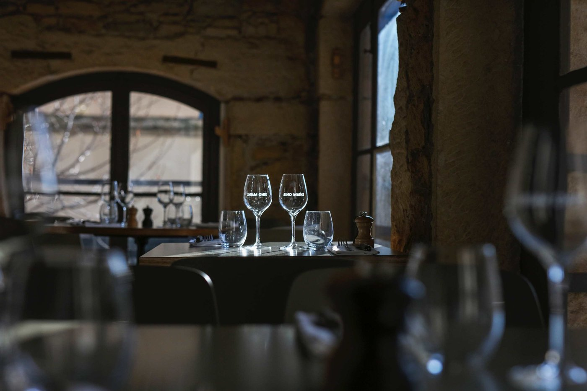

Où manger à Lyon : 15 tables en 2026
Quatre maisons à deux étoiles, deux nouvelles étoiles en 2026, des bouchons labellisés et trois adresses très citées qui ont fermé sans que personne ne le signale. Voici ce que vaut vraiment la carte lyonnaise cette année.

Lyon mérite sa réputation, mais les listes qui circulent sur la ville sont périmées. En vérifiant une par une les adresses les plus citées, nous avons trouvé trois maisons fermées, dont une depuis huit ans, une table qui a déménagé de rive, et un chef promu à deux étoiles que tout le monde annonce encore à une. Voici quinze tables qui existent, avec leur vraie adresse.
L'essentielLyon à table en 2026
- Quatre tables à deux étoiles : Paul Bocuse à Collonges, Takao Takano, La Mère Brazier et Le Neuvième Art.
- Takao Takano passe à deux étoiles dans l'édition 2026. Beaucoup de classements le donnent encore à une.
- Deux premières étoiles lyonnaises cette année : Circle, de Bastien Ruga, et Les Loges, dans le Vieux-Lyon.
- Trois adresses très citées ont fermé, dont le Café Sillon, fermé depuis juillet 2018 et toujours recommandé un peu partout.
Ce que nous avons vérifié
Ce guide part des adresses qui reviennent le plus souvent dans la presse, les guides et les agrégateurs, puis les passe au crible : la maison existe-t-elle encore, à quelle adresse exacte, dans quel arrondissement, avec quelles distinctions à jour. C'est fastidieux et ce n'est pas glorieux, mais c'est là que se joue l'utilité d'un guide.
Le résultat est net. Sur les adresses les plus recommandées de Lyon, trois sont fermées, une a changé de quartier, et plusieurs sont systématiquement rangées dans le mauvais arrondissement, Le Neuvième Art dans le 9e quand il est dans le 6e, Cinq Mains à la Guillotière quand il est dans le Vieux-Lyon, Le Bouchon des Carnivores dans le Vieux-Lyon quand il est dans la Presqu'île. Les critères éditoriaux sont ensuite ceux de notre grille.
- Le Passe Temps. Étoilé rue Tronchet dans le 6e, la maison de Younghoon Lee a fermé à Lyon le 14 décembre 2024 pour s'installer à Paris, sous le même nom et avec le même concept.
- L'Ourson qui Boit. Le bistrot franco-japonais d'Akira Nishigaki, rue Royale, a fermé en 2019. Les lieux ont été repris sous une autre enseigne.
- Café Sillon. Le restaurant de Mathieu Rostaing-Tayard, avenue Jean-Jaurès dans le 7e, a fermé définitivement le 20 juillet 2018. Le chef est revenu depuis avec Micro Sillon, qui figure dans notre sélection.
Les 15 tables
-
01
La Mère Brazier
Lyon 1er · Cuisine française classique
2 étoiles MichelinMathieu Viannay, MOFLa salle de La Mère Brazier, rue Royale. Photo La Mère Brazier. La Mère Brazier incarne la gastronomie lyonnaise dans sa plus pure expression. La maison est celle d'Eugénie Brazier, première personne à décrocher six étoiles Michelin en 1933, trois ici et trois au col de la Luère. Mathieu Viannay l'a reprise en 2008 et lui a rendu ses deux étoiles sans renier son héritage. Boiseries chaudes, nappes immaculées, service qui ne pèse jamais.
En cuisine, c'est l'excellence sans détour : les classiques lyonnais revisités avec finesse, des sauces qui sont des hymnes à la tradition française, une maîtrise technique impressionnante. Les quenelles fondent, la volaille de Bresse est traitée avec le respect qu'elle mérite, les abats deviennent poésie. Seul bémol : l'addition, justifiée mais exigeante.
À noter : la maison a changé de mains au printemps 2026, cédée au groupe de Matthieu Gufflet. Mathieu Viannay reste au piano et en cogérance.
Pour qui ? Les amoureux de gastronomie classique, et les grandes occasions.
- Adresse12 rue Royale, Lyon 1er
- ChefMathieu Viannay
- BudgetOrdre de grandeur : 180 à 250 €
- HistoireMaison d'Eugénie Brazier, depuis 1921
-
02
Takao Takano
Lyon 6e · Franco-japonais
2 étoiles MichelinPromotion 2026Takao Takano est une rencontre heureuse entre deux cultures : la rigueur française et la délicatesse japonaise. Le chef, installé rue Malesherbes depuis 2013, maîtrise les deux univers avec une égale virtuosité. La salle ressemble davantage à un appartement qu'à un restaurant, avec une poignée de tables seulement : il dit lui-même servir vingt convives comme on reçoit quelques amis.
Les assiettes racontent un dialogue : un bouillon français qui devient dashi, une sauce qui s'inspire du miso, des poissons crus à côté de cuissons très maîtrisées. Les saveurs sont nettes, les techniques impeccables. Ce qui peut décevoir : un cadre austère pour qui cherche de la chaleur.
Le fait marquant de l'année : le Guide Michelin lui a accordé une deuxième étoile dans l'édition 2026. Lyon compte désormais quatre tables à ce niveau.
Pour qui ? Les amateurs de fusion réfléchie, les curieux de saveurs précises.
- Adresse33 rue Malesherbes, Lyon 6e
- Ouvertdepuis 2013
- BudgetOrdre de grandeur : 150 à 200 €
-
03
Le Neuvième Art
Lyon 6e · Gastronomie créative
2 étoiles MichelinChristophe Roure, MOF 2007
Une assiette du Neuvième Art. Photo Le Neuvième Art. Le Neuvième Art, c'est la signature de Christophe Roure : une cuisine qui joue avec les codes sans les détruire, qui surprend sans dérouter. Passé par les cuisines de Paul Bocuse et de Régis Marcon, Meilleur Ouvrier de France en 2007, il a ouvert sa maison des Brotteaux en 2014 et décroché sa deuxième étoile dès 2015.
Le décor épuré met les assiettes en avant, et c'est là que réside la magie : chaque plat est pensé comme une composition, couleurs, textures, équilibres. Les produits sont irréprochables, les cuissons précises, les associations audacieuses mais jamais gratuites. Ce qui peut décevoir : le prix, et un parti pris créatif qui ne parle pas à tout le monde.
Pour qui ? Les curieux de gastronomie contemporaine, les amateurs d'innovation maîtrisée.
- AdresseQuartier des Brotteaux, Lyon 6e
- ChefChristophe Roure
- BudgetOrdre de grandeur : 160 à 220 €
-
04
Christian Têtedoie
Lyon 5e · Gastronomie avec vue
1 étoile MichelinÉtoile verteMOFLa salle panoramique de Têtedoie, sur Fourvière. Photo Christian Têtedoie. Têtedoie offre plus qu'un repas. Perchée sur la colline de Fourvière dans une construction de verre, la maison ouvre une vue à 180 degrés sur Lyon, qui devient un élément du décor. Christian Têtedoie, Meilleur Ouvrier de France, y est étoilé depuis 2000, et a obtenu l'étoile verte du guide en 2021 pour sa démarche durable.
La cuisine est généreuse et savoureuse, ancrée dans les traditions lyonnaises mais ouverte aux influences contemporaines. Les produits locaux sont à l'honneur, les sauces riches, les accompagnements soignés. Ce qui peut décevoir : la salle peut être bruyante quand elle est pleine.
Pour qui ? Les grandes occasions avec vue, et ceux qui veulent une gastronomie qui ne se prend pas au piège du cérémonial.
- Adresse4 rue Professeur Pierre Marion, Lyon 5e
- DistinctionsÉtoilé depuis 2000, étoile verte en 2021
- BudgetOrdre de grandeur : 120 à 180 €
-
05
Prairial
Lyon 2e · Cuisine végétale et de saison
1 étoile MichelinÉtoile verte
La salle de Prairial, dans son bâtiment de la Confluence. Photo Prairial. Prairial prouve qu'une cuisine centrée sur le végétal peut être aussi complexe et séduisante que n'importe quelle autre. Gaëtan Gentil et Céline Boinon y travaillent le produit de la vallée du Rhône, les herbes et les plantes sauvages, depuis une cuisine ouverte au milieu de la salle. Étoilés depuis 2016, ils ont reçu l'étoile verte en 2021.
Un point que beaucoup de listes n'ont pas encore intégré : après huit ans rue de Chavanne dans le 1er, la maison a déménagé à la Confluence, place Hubert-Mounier, dans un bâtiment écoresponsable du sol au plafond. Les anciennes adresses circulent toujours.
Pour qui ? Ceux qui cherchent une cuisine légère mais savoureuse, et les curieux de ce que devient la gastronomie quand elle prend l'écologie au sérieux.
- Adresse1 place Hubert-Mounier, Lyon 2e, Confluence
- Maison deGaëtan Gentil et Céline Boinon
- BudgetOrdre de grandeur : 80 à 130 €
-
06
Les Loges
Lyon 5e · Gastronomie, cour Renaissance
1 étoile Michelin 2026Nouvelle étoileLes Loges est l'une des trois bonnes nouvelles lyonnaises de l'édition 2026 du Guide Michelin, qui lui a accordé une première étoile. La table occupe la cour à loggias Renaissance de la Cour des Loges, au cœur du Vieux-Lyon, l'un des plus beaux volumes de restaurant de la ville.
C'est la table à réserver si l'on veut voir où va la scène lyonnaise plutôt que d'où elle vient : une cuisine de saison servie sous une verrière, dans un décor classé, à quelques pas des bouchons de la rue Saint-Jean.
Pour qui ? Ceux qui veulent goûter une étoile de l'année, et les amateurs de beaux lieux.
- AdresseCour des Loges, Vieux-Lyon, Lyon 5e
- DistinctionPremière étoile en 2026
- BudgetNon relevé sur le site officiel
-
07
Circle
Lyon · Cuisine contemporaine
1 étoile Michelin 2026Bastien RugaCircle, la table de Bastien Ruga, est l'autre étoile lyonnaise de l'année 2026. Le guide a distingué une cuisine contemporaine qui assume ses partis pris, dans un format resserré.
C'est le genre d'adresse qui explique pourquoi Lyon reste une ville de cuisiniers : la relève n'attend pas que les places se libèrent, elle ouvre ailleurs et se fait remarquer vite.
Pour qui ? Ceux qui suivent les promotions du guide et veulent y aller avant que les réservations ne se ferment.
- ChefBastien Ruga
- DistinctionPremière étoile en 2026
- AdresseVoir le site de la maison
- BudgetNon relevé sur le site officiel
-
08
Maison Clovis
Lyon 6e · Française à accents libanais
Clovis Khoury
Une assiette de la Maison Clovis. Photo Maison Clovis. Maison Clovis sert une cuisine française généreuse, traversée d'influences orientales. Clovis Khoury y signe une carte de saison où les épices et les herbes du Levant apportent du caractère à des bases classiques. La salle, boulevard des Brotteaux, joue les matériaux naturels et les tons chauds.
Les menus découverte, en quatre ou cinq services, permettent de mesurer l'étendue du travail, avec des accords possibles sur une cave d'une centaine de références servies à prix caviste. Ce qui peut décevoir : la salle peut être bruyante quand elle est pleine.
Pour qui ? Ceux qui cherchent une vraie table sans le cérémonial de l'étoile, et les amateurs de cuisine du Levant.
- Adresse19 boulevard des Brotteaux, Lyon 6e
- ChefClovis Khoury
- MenusÀ partir de 44 € au déjeuner
- RelevéTarif publié par la maison
-
09
Substrat
Lyon 4e · Cave à manger, vins nature
Hubert Vergoin
Une assiette de Substrat, rue Pailleron. Photo Substrat. Substrat est une cave à manger de la Croix-Rousse où les vins nature sont les vedettes et la cuisine leur répond. Hubert Vergoin travaille en bio et au rythme des saisons, dans une salle décontractée où l'on mange serré et bien.
Les assiettes sont généreuses, les produits sourcés, et l'équipe présente ses bouteilles avec la passion de gens qui les ont choisies une par une. La maison a essaimé rue Pailleron, avec la Cabane pour les groupes et une saucissonnerie en face. Ce qui peut décevoir : un service qui ralentit aux heures pleines, et des vins parfois trop décalés pour un palais classique.
Pour qui ? Les amateurs de vins nature, et ceux qui veulent bien manger sans cérémonie.
- Adresse7 rue Pailleron, Lyon 4e
- ChefHubert Vergoin
- BudgetOrdre de grandeur : 40 à 65 €
- Téléphone04 78 29 14 93
-
10
Micro Sillon
Lyon 1er · Bistronomie, vins nature
Mathieu Rostaing-TayardOuvert en décembre 2024Micro Sillon est le retour de Mathieu Rostaing-Tayard à Lyon. Le chef du Café Sillon, qui avait fermé en 2018 et était parti ouvrir à Biarritz, est revenu place Fernand-Rey avec Joanna Figuet : d'abord une cave à vin en 2021, puis le restaurant, en décembre 2024, juste à côté.
Le format est plus resserré que celui du Sillon, mais l'expression est la même : une cuisine de produit, courte, servie le soir seulement, dans une salle minuscule. C'est l'une des tables les plus recherchées de la Presqu'île, et l'une des plus difficiles à réserver.
Pour qui ? Ceux qui suivaient le Café Sillon et l'ont regretté, et les amateurs de vins nature.
- Adresse6 place Fernand-Rey, Lyon 1er
- ChefMathieu Rostaing-Tayard
- ServiceLe soir, fermé dimanche et lundi
- BudgetNon relevé sur le site officiel
-
11
Imouto
Lyon 7e · Bistronomie franco-japonaise
Table à suivreImouto sert une cuisine franco-japonaise dans un format bistronomique, rue Pasteur, dans le 7e et non dans la Presqu'île comme on le lit souvent. Le décor est épuré, la salle petite, l'ambiance sans façon.
Les produits sont soignés, les cuissons précises, et le dialogue entre les deux cuisines se fait sur les bouillons, les fermentations et les textures plutôt que sur les clichés. Ce qui peut décevoir : la salle est exiguë et il faut réserver.
Pour qui ? Les amateurs de cuisine japonaise qui ne se limite pas au sushi, et les curieux.
- Adresse21 rue Pasteur, Lyon 7e
- BudgetOrdre de grandeur : 60 à 100 €
- Téléphone04 72 76 99 53
-
12
Cinq Mains
Lyon 5e · Cuisine du produit
Entré au Guide Michelin 2026Wandrille Beaugrand
La salle de Cinq Mains, quai de Saône. Photo Cinq Mains. Cinq Mains est entré dans le Guide Michelin en 2026, aux côtés de La Meunière, d'Accentué et de La Virée. La maison est installée au cœur du Vieux-Lyon, sur les quais de Saône, rue Monseigneur-Lavarenne, et non à la Guillotière comme on le lit parfois.
Wandrille Beaugrand y travaille les produits simples avec une exigence qui tranche avec le quartier, plus habitué au tourisme qu'à la cuisine sérieuse. La salle est ouverte tous les jours, midi et soir, ce qui est rare ici. Ce qui peut décevoir : on mange serré.
Pour qui ? Ceux qui veulent bien manger dans le Vieux-Lyon sans tomber dans un piège à touristes.
- Adresse12 rue Monseigneur-Lavarenne, Lyon 5e
- ChefWandrille Beaugrand
- ServiceTous les jours, midi et soir
- BudgetOrdre de grandeur : 25 à 45 €
-
13
Daniel & Denise Saint-Jean
Lyon 5e · Bouchon labellisé
Les Bouchons LyonnaisAuthentiques Bouchons LyonnaisJoseph Viola, MOF
En cuisine chez Daniel & Denise Saint-Jean. Photo Office de tourisme de Lyon. Daniel & Denise Saint-Jean est la référence du bouchon lyonnais tenu par un Meilleur Ouvrier de France. Joseph Viola y respecte la tradition en la sublimant : quenelles, tablier de sapeur, cervelle de canut, pâté en croûte, exécutés avec une précision qu'on ne trouve pas partout dans le quartier.
Murs de pierre, poutres, nappes à carreaux : le décor coche toutes les cases, et la maison porte les deux labels lyonnais, ce qui est loin d'être le cas de tous les bouchons. Ce qui peut décevoir : les prix sont un cran au-dessus de la moyenne, et le quartier est très touristique.
Pour qui ? Ceux qui veulent le bouchon sans compromis, avec le métier en plus.
- Adresse36 rue Tramassac, Lyon 5e
- ChefJoseph Viola, MOF
- BudgetOrdre de grandeur : 45 €
- À lireNotre guide des bouchons lyonnais
-
14
Le Bouchon des Filles
Lyon 1er · Bouchon contemporain
Isabelle et Laura
Une assiette du Bouchon des Filles. Photo Le Bouchon des Filles. Le Bouchon des Filles relit la tradition bouchonnière au féminin. Isabelle et Laura, formées au Café des Fédérations, l'ont ouvert il y a une quinzaine d'années au pied de la Croix-Rousse, dans un immeuble du XVIIIe, en hommage aux mères lyonnaises.
Le service se fait en petites assiettes à partager, ce qui change du bouchon classique et permet de goûter à tout. Ce qui peut décevoir : les puristes trouveront le décor trop contemporain, et la maison ne porte aucun des deux labels lyonnais, ce qui ne dit rien de sa cuisine.
Pour qui ? Ceux qui aiment la tradition sans le folklore, et les groupes.
- Adresse20 rue Sergent-Blandan, Lyon 1er
- Maison deIsabelle et Laura
- MenusAutour de 30 €
- Téléphone04 78 30 40 44
-
15
Le Bouchon des Carnivores
Lyon 2e · Viandes et abats
Aucun label lyonnaisLe Bouchon des Carnivores est installé rue des Marronniers, dans la Presqu'île et non dans le Vieux-Lyon comme l'indiquent beaucoup de listes. Le décor évoque une ancienne boucherie, et la carte annonce la couleur : viandes, abats, cuissons longues.
La maison est ouverte sept jours sur sept en service continu, ce qui la rend précieuse quand tout le reste est fermé entre les services. Ce qui peut décevoir : elle ne porte aucun des deux labels lyonnais, et l'endroit est bruyant et bondé.
Pour qui ? Les carnivores, et ceux qui cherchent une table à 15 heures.
- Adresse8 rue des Marronniers, Lyon 2e
- Service7 jours sur 7, en continu
- BudgetOrdre de grandeur : 25 à 40 €


Ce que la carte lyonnaise raconte
Le premier fait de l'année est une promotion : Takao Takano rejoint le club des deux-étoiles, portant à quatre le nombre de maisons lyonnaises à ce niveau, Paul Bocuse compris. C'est un chef japonais installé depuis 2013 dans une salle de vingt couverts qui rejoint Bocuse et Brazier : la ville a changé, et le guide l'enregistre.
Le deuxième est écologique. Deux des tables de cette liste, Têtedoie et Prairial, portent l'étoile verte du guide, obtenue toutes deux en 2021. Prairial est allée jusqu'à déménager dans un bâtiment écoresponsable de la Confluence. À Lyon, la durabilité n'est plus un argument de communication, c'est un poste de dépense.
Le troisième tient à la relève. Les deux premières étoiles de l'année vont à des maisons jeunes, et quatre nouvelles adresses entrent au guide, dont un bouchon, La Meunière, et Cinq Mains. La ville ne vit pas que de son patrimoine.
Pour la tradition proprement dite, notre guide des 10 meilleurs bouchons lyonnais démêle les deux labels concurrents et dit ce qu'ils garantissent.
Questions fréquentes
Quel est le meilleur restaurant de Lyon ?
Lyon compte quatre tables à deux étoiles Michelin dans l'édition 2026 : La Mère Brazier et Le Neuvième Art, Takao Takano, promu cette année, et Paul Bocuse à Collonges-au-Mont-d'Or, hors de la ville. En tête de notre sélection, La Mère Brazier, pour ce que la maison représente autant que pour ce qu'elle sert : c'est celle d'Eugénie Brazier, première personne à détenir six étoiles Michelin, en 1933.
Quels sont les restaurants étoilés de Lyon en 2026 ?
Quatre tables à deux étoiles : Paul Bocuse à Collonges, Takao Takano, La Mère Brazier et Le Neuvième Art. Côté première étoile, l'édition 2026 en a décerné deux dans la ville, à Circle de Bastien Ruga et aux Loges dans le Vieux-Lyon, plus une à Yo Miyazaki à Saint-Genis-Laval. Trois maisons ont perdu la leur : Les Terrasses de Lyon, Le Gourmet de Sèze et La Sommelière.
Où manger à Lyon pour moins de 45 € ?
Cinq Mains, dans le Vieux-Lyon, sert entre 25 et 45 € et vient d'entrer au Guide Michelin. Le Bouchon des Carnivores, rue des Marronniers, tourne autour de 25 à 40 € et sert en continu sept jours sur sept. Le Bouchon des Filles propose des menus autour de 30 €, et Substrat, à la Croix-Rousse, se situe entre 40 et 65 €.
Où manger à Lyon en amoureux ?
Têtedoie, pour sa salle de verre sur la colline de Fourvière et sa vue à 180 degrés sur la ville. Takao Takano, pour une salle qui ressemble à un appartement et ne compte qu'une poignée de tables. Et Micro Sillon, pour le format resserré et le service du soir seulement, si vous arrivez à réserver.
Quel bouchon lyonnais choisir ?
Daniel & Denise Saint-Jean, dans le Vieux-Lyon, est tenu par Joseph Viola, Meilleur Ouvrier de France, et porte les deux labels lyonnais. Le Bouchon des Filles, au pied de la Croix-Rousse, sert en petites assiettes à partager et n'en porte aucun, ce qui ne dit rien de sa cuisine. Notre guide des bouchons lyonnais détaille les deux labels concurrents et ce qu'ils garantissent.
Quels restaurants lyonnais ont fermé récemment ?
Trois adresses très citées ne sont plus ouvertes. Le Passe Temps, étoilé du 6e, a fermé à Lyon le 14 décembre 2024 pour partir à Paris. L'Ourson qui Boit, rue Royale, a fermé en 2019. Et le Café Sillon, avenue Jean-Jaurès, a fermé définitivement le 20 juillet 2018 ; son chef, Mathieu Rostaing-Tayard, est revenu depuis avec Micro Sillon.
Sources
Distinctions, adresses et fermetures relevées le 31 août 2026 sur les pages ci-dessous et sur les sites officiels des maisons.
- Lyon Capitale, les nouvelles étoiles lyonnaises du Michelin 2026.
- Tribune de Lyon, trois nouvelles étoiles pour la scène lyonnaise.
- Tribune de Lyon, la fermeture du Café Sillon.
- Sortir à Paris, le départ du Passe Temps pour Paris.
- Office de tourisme de Lyon, les tables étoilées de la ville.
Une maison qui ferme, déménage ou change de chef, une distinction obtenue ou perdue : signalez-le nous. Les corrections sont datées sur la page.
À lire aussi
Sur la troisième grande scène française, notre palmarès des 8 meilleurs restaurants de Marseille.
Pour la tradition lyonnaise, notre guide des 10 meilleurs bouchons lyonnais. À l'échelle du pays, le palmarès des 15 meilleurs restaurants de France. Et pour la capitale, les 25 meilleurs restaurants de Paris.
Les photographies d'établissement sont fournies par les maisons ou par l'Office de tourisme de Lyon, et publiées avec leur accord. Toute maison souhaitant le retrait d'une image peut nous écrire : elle est retirée sans délai. Aucune des maisons citées dans cet article n'a été visitée par la rédaction à ce jour.